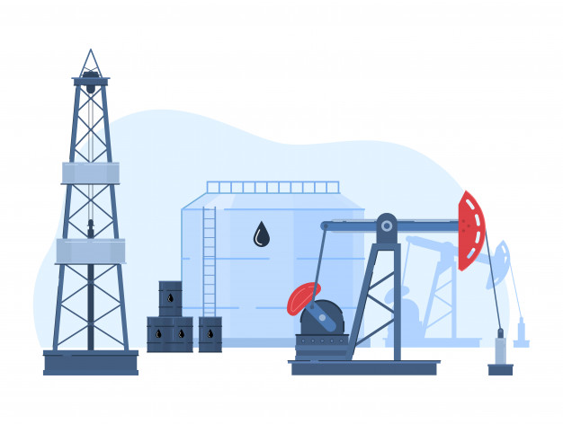

Black gold is an informal term for oil or petroleum—black because of its appearance when it comes out of the ground, and gold because it made everyone involved in the oil industry rich.
Reservoir adalah formasi batuan porous dan permeable di bawah tanah yang mengandung akumulasi minyak dan gas bumi. Cara terdapatnya minyak bumi di bawah permukaan haruslah memenuhi beberapa syarat. Ada 3 (tiga) unsur pembentuk suatu reservoir minyak bumi, yaitu :
Batuan reservoir, sebagai wadah yang diisi dan dijenuhi oleh minyak dan gas bumi. Biasanya batuan reservoir berupa lapisan batuan yang berongga-rongga ataupun berpori-pori.
Lapisan penutup (cap rock), yaitu suatu lapisan yang tidak permeable terdapat di atas suatu reservoir dan menghalang-halangi minyak dan gas bumi yang akan keluar dari reservoir.
Perangkap reservoir (reservoir trap), merupakan suatu unsur pembentuk yang bentuknya sedemikian rupa sehingga lapisan beserta penutupnya merupakan bentuk konkav ke bawah dan menyebabkan minyak dan gas bumi berada dibagian teratas reservoir.
PEMBORAN

Operasi pemboran merupakan suatu kegiatan yang terdiri dari beberapa tahapan kegiatan. Sebelum operasi pemboran dapat dilaksanakan, pertama-tama yang perlu dilakukan adalah apa yang disebut dengan tahap persiapan. Tahap persiapan ini pun terdiri dari beberapa tahapan mulai dari persiapan tempat, pengiriman peralatan pada lokasi, penunjukan pekerja sampai pada persiapan akhir.
Bila seandainya tempat untuk lokasi pemboran yang diperkirakan ada cadangan minyak atau gas yang cukup potensial dan tempat tersebut masih merupakan suatu tempat yang dianggap liar maka dengan sendirinya kita perlu membuat tempat tersebut menjadi tempat yang memungkinkan terlaksananya operasi pemboran.
Pada operasi pemboran ini, peralatan yang dipakai terbagi menjadi beberapa sistem.
Sistem pengangkatan (Hoisting System)
Fungsi dari hoisting system adalah untuk menyediakan fasilitas dalam mengangkat, menahan dan menurunkan drillstring, casing string dan perlengkapan bawah permukaan lainnya dari dalam sumur atau ke luar sumur.
Dua jenis kegiatan rutin yang sering menggunakan peralatan hoisting system pada saat operasi pemboran adalah:
Menyambung rangkaian string (making connection). Melaksanakan penyambungan berhubungan dengan proses penambahan sambungan baru pada drillpipe untuk penembusan yang makin dalam.
Mencabut dan menurunkan rangkaian string (tripping out dan tripping in). Kegiatan ini meliputi proses pencabutan drillstring dari lubang bor untuk mengganti kombinasi peralatan yang digunakan dibawah permukaan (Bottom Hole Assembly) dan kemudian menurunkan rangkaian string kembali ke dalam sumur pemboran. Kegiatan ini biasanya dilakukan untuk mengganti bit yang sudah mulai tumpul.
Sistem pemutar (Rotating System)
Rotary system termasuk semua peralatan yang digunakan untuk mentransmisikan putaran meja putar ke bit.Bagian utama dari rotary sistem adalah:
Swivel
Kelly
Drillpipe
Rotary Drive
Rotary Table
Heavy Weight Drill Pipe
Drill Collar
Bit
Sistem sirkulasi (Circulating System)
Fungsi utama dari sistem sirkulasi adalah mengangkat serpihan cutting dari dasar sumur kepermukaan.Fluida pemboran umumnya berupa suspensi dari clay dan material lainya dalam air yang sering disebut dengan lumpur pemboran.Peralatan utama dari circulating system adalah :
Mud pumps: Berfungsi untuk memompa fluida pemboran dengan tekanan tinggi. Ada dua macam mud pump yaitu : Duplex dan triplex. Perbedaan utamanya adalah dalam jumlah torak dan cara kerjanya
Mud pits: Suatu kolam tempat lumpur sebelum disirkulasikan.Sistem pit dan susunan dari peralatan yang menangani lumpur di atas pit dirancang atas pertimbangan drilling engineer.Biasanya rig mempunyai dua atau tiga pit dengan ukuran lebar 8 - 12 ft, panjang 20 - 40 ft dan tinggi 6 - 12 ft. Volumenya berkisar antara 200 - 600 bbl.Pada operasi-operasi di offshore dapat ditambahkan 1 - 3 pit untuk penyimpanan kelebihan lumpur dan untuk lumpur yang mempunyai densitas tinggi.Salah satu bentuk susunan dari pit tanpa variasi dari macam-macam peralatan pengontrol solid.
Mud mixing equipment: Suatu peralatan yang berfungsi untuk mencampurkan bahan-bahan atau material pada lumpur dengan menggunakan mixing hopper. Mixing Hopper : Peralatan berbentuk corong yang dipakai untuk menambahkan bahan-bahan padat ke dalam fluida pemboran pada saat treatment di dalam mud pit
Contaminant removal : Suatu perlatan yang berfungsi untuk membersihkan fluida pemboran yang keluar dari lubang sumur setelah disirkulasikan
Sistem daya (Power System)
Hampir sebagian besar daya yang tersedia pada rig dikonsumsi oleh hoisting system dan circulating system. Sistem lainnya hanya sedikit mengkonsumsi daya yang tersedia. Untungnya, hoisting dan circulating system memerlukan daya tidak secara bersamaan, sehingga mesin yang sama dapat menyediakan daya untuk kedua sistem tersebut. Total daya yang umum diperlukan dalam sebuah rig dari 1000 sampai 3000 HP.
Rig modern sumber penggeraknya biasanya berasal dari internal- combustion diesel-engine dan secara umum diklasifikasikan menjadi Diesel-electric type dan Direct-drive type. Penggunaannya Tergantung dari metode yang digunakan untuk mentransmisikan daya tersebut ke berbagai sistem dalam rig. Bagian-bagian power system:
Prime Mover, merupakan motor utama yang menyalurkan tenaga ke komplek pemboran
System Transmisi, tenaga yang dibangkitkan dengan prime mover harus disalurkan ke bagian-bagian utama dari system pemboran rotary drilling.
Sistim Utama Komponen Yang Membutuhkan Tenaga:
Hoisting System
Rotating System
Drawworks
Rotary Table
Driller Console
Sistem pencegah sembur liar (BOP System)
Blowout preventer (BOP) adalah peralatan yang diletakkan tepat di atas permukaan sumur untuk menyediakan tenaga untuk menutup sumur bila terjadi kenaikan tekanan dasar sumur yang tiba-tiba dan berbahaya selama atau sedang dalam operasi pemboran. Jumlah, ukuran dan kekuatan BOP yang digunakan tergantung dari kedalaman sumur yang akan dibor serta antisipasi maksimum terhadap tekanan reservoir yang akan dijumpai.
Blowout preventer (BOP) system digunakan untuk mencegah aliran fluida formasi yang tidak terkendali dari lubang bor. Saat bit menembus zone permeabel dengan tekanan fluida melebihi tekanan hidrostatik normal, maka fluida formasi akan menggantikan fluida pemboran. Masuknya fluida formasi ke dalam lubang bor sering disebut dengan kick. Berdasarkan tempat berfungsinya alat BOP terbagai atas :
Annular Preventer
Annular BOP didesain untuk menutup di sekeliling lubang sumur dengan berbagai jenis ukuran dan bentuk peralatan yang sedang diturunkan ke dalam lubang bor. Sehingga annular BOP ini dapat menutup annulus disekitar drillpipe, drillcolar dan casing, juga dapat mengisolasi sumur dalam kondisi open hole.
Annular preventer berupa master valve yang umumnya ditutup pertama kali bila sumur mengalami well kick, karena kefleksibelan karet penutup untuk mengisolasi lubang bor.
Drillpipe Blowout Preventer
Pencegahan blowout melalui dillpipe merupakan salah satu cara pengontrolan sumur yang sangat penting. Bila suatu kick terjadi, biasanya ada fluida yang masuk ke annulus dan bercampur dengan aliran fluida pemboran selama sirkulasi pemboran yang normal. Bagaimanapun fluida kick akan masuk ke dalam drillpipe, sehingga tekanan di dalam drillpipe akan lebih rendah dibandingkan jika tidak terjadi kick. Kolom vertikal lumpur dalam drillpipe relatif akan dipisahkan oleh volume fluida yang masuk. Karena itulah pemilihan dan penggunaan peralatan drillpipe blowout preventer adalah penting untuk mengontrol kick dengan tepat.
Beberapa peralatan yang dapat menanggulangi tekanan pada drillpipe selama terjadi kick yang utama diantaranya adalah kelly dan valve-valve yang berhubungan seperti kelly cocks. Apabila kelly tidak digunakan, valve-valve drillstring terpaksa harus dapat mengontrol tekanan. Valve-valve disini dapat dikontrol secara otomatis ataupun manual dan dapat dipasang sebagai bagian permanen dari drillstring atau dipasang bila terjadi kick.
PRODUKSI
Operasi produksi merupakan kegiatan yang bertujuan untuk mengangkat minyak dari dalam permukaan bumi menuju ke permukaan menggunakan berbagai macam metoda yang sudah ada.
Tahap operasi produksi dimulai apabila sumur telah selesai dikomplesi (Well Completion), dimana tipe komplesi yang digunakan terutama tergantung pada karakteristik dan konfigurasi antar formasi produktif dengan formasi di atas dan di bawahnya, tekanan formasi, jenis fluida dan metoda produksi.
Metoda produksi yang selama ini dikenal, meliputi metoda sembur alam (Flowing Well) dan metoda pengangkatan buatan (Artificial Lift). Metoda sembur alam diterapkan apabila tenaga alami reservoir masih mampu mendorong fluida ke permukaan, sedangkan metoda pengangkatan diterapkan apabila tenaga alami reservoir sudah tidak mampu mendorong fluida ke permukaan.
Setelah fluida sumur sampai ke permukaan, fluida dialirkan ke block station (BS) melalui pipa-pipa alir untuk dilakukan pemisahan air, minyak, dan gas bumi. Gas hasil pemisahan, selain dapat langsung dimanfaatkan untuk industri dapat pula digunakan injeksi gas lift atau pressure maintenance, sedangkan minyak bumi (crude oil) umumnya ditampung terlebih dahulu di pusat pengumpulan minyak (PPM) sebelum dikirim ke pengilangan atau terminal untuk dikapalkan.
Untuk operasi produksi lepas pantai, diperlukan fasilitas produksi lepas pantai berupa anjungan produksi (platform) untuk menempatkan peralatan produksi wellhead X-mastree sampai fasilitas pemisahan (satelit) : floating tanker untuk menampung crude oil serta mooring untuk pengapalan. Di beberapa tempat dijumpai pula bahwa X-mastree manifold dan tangki pengumpul tidak ditempatkan di anjungan tetapi di tempatkan di dasar laut.
Untuk operasi lapangan panas bumi (geothermal) secara prinsip tidak jauh beda dengan operasi lapangan migas. Akan dijumpai perbedaan khususnya pada pengendalian uap akibat tekanan yang cukup tinggi dan adanya amplitudo yang cukup besar antara suhu uap dan suhu permukaan bumi, sistem pemisahan dan pemanfaatan energi.